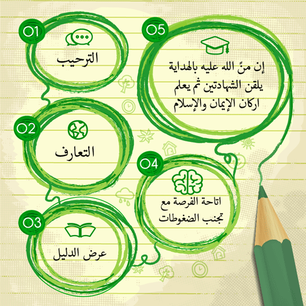

<ion-view view-title="الدعوة و المتابعات">            
	<ion-content has-header="true" padding="true">    

        <div class="serv-position clearfix">
            <div class="serv">
                <div class="serv-img"></div>    
                <h3> الدعوة </h3>
                <p dir="rtl">
                قال تعالى : ( ومن أحسن قولا مما دعى إلى الله و عمل صالحا وقال انني من المسلمين )<br>
                
                وقال صلى الله عليه وسلم : ( لئن يهدي الله بك رجلا واحدا خير لك من حمر النعم ) <br>
                
                اجر لك غير منقطع وعلم نافع يستمر فيضه لك في قبرك <br>
                
                ساهم معنا في دعوة العمالة المنزلية أو من تعرف من غير المسلمين عبر ارسال بياناتهم <br>
                </p>
                <br>
                <a href="#/dawanon" class="frameBtn btn btn-success btn-lg btn-default">
                دعوة غير المسلمين
                </a>        
            </div>
        </div>
        
        <div class="serv-position clearfix">
            <div class="serv">
                <div class="serv-img"></div>    
                <h3> متابعة المسلمين الجدد </h3>
        <p dir="rtl">
        الاخوة الاعزاء :<br>
        متابعة المسلم الجديد اكثر الامور ارهاقا للمكتب لعدد المسملني الجدد الكبير فنامل منكم  المساهمه معنا في توعيتهم و رعايتهم<br>
        </p><br>
        
            <br>       
            <a href="#/dawanew" class="frameBtn btn btn-success btn-lg btn-default">
        متابعة المسلمين الجدد
            </a>
            </div>
        </div>
      
	</ion-content>
</ion-view>